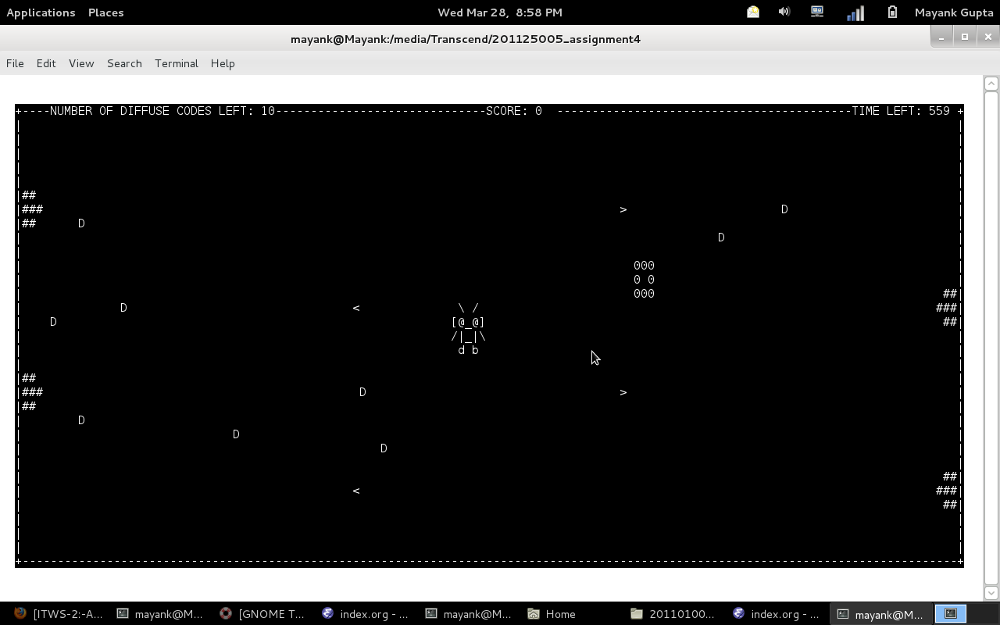
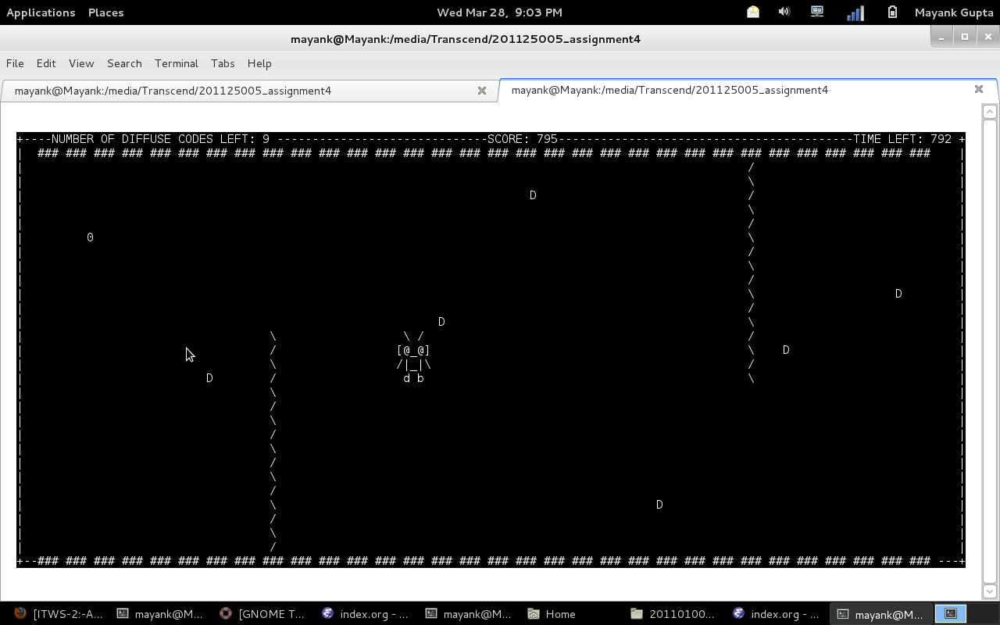

ITWS2 FALL SPRING 2012 ASSIGNMENT 4
Table of Contents
1 Student Details:
1.1 Name: Nehal J. Wani
1.2 Roll No: 201125005
2 Code Organization:
- The whole program is divided into 2 Parts
-
Part 1 contains the mail python code. This contains the program which controls the flow. Part 2 contains text files containing ascii art. These contain images for add-on effect.
3 Class Decomposition:
3.1 My code has five classes ::
3.1.1 Class1. curses_screen
- Used for making a screen on which components of game can be displayed. Contains the methods __enter__ and __exit__ so that
withkeyword can be used to implement objects. Initializes a screen and returns with basic parameters.
class curses_screen:
""" Creates A Screen """
def __enter__(self):
self.stdscr = curses.initscr()
curses.cbreak()
self.stdscr.clear()
curses.noecho()
self.stdscr.keypad(1)
self.stdscr.border(0)
return self.stdscr
def __exit__(self,a,b,c):
curses.echo()
curses.endwin()
self.stdscr.getch()
self.stdscr.clear()
self.stdscr.refresh()
3.1.2 Class2. curses_window
- Used for generating a window in which the arena is displayed. Just returns an initialized window.
class curses_window:
""" Creates A Window """
def __init__(self):
curses.curs_set(0)
curses.noecho()
self.win=curses.newwin(LINES-4,COLS-4,2,2)
self.win.clear()
self.win.refresh()
self.win.keypad(1)
3.1.3 Class3. Gun
- Used for putting guns [big and small] on the game arena.
- Method1: fire_small :: Calculate Position Of Small Bullet
- Method2: getBullPos :: Firing Small Bullet
- Method3: fire_big :: Calculate Position Of Big Bullet
- Method4: clear :: Clear game window
3.1.4 Class4. Robot
- Method1: place :: Place Robot @ Given Coordinates
- Method2: move :: Move Robot @ Given Coordinates
- Used for generating upto 10 types of different robots and perform operations such as move and place
3.1.5 Class5. MyGame which inherits from curses_window
- Used for starting the game as it contains the necessary components and methods for the game to run
- Method1: Pause :: Simple Pause
- Method2: Display_Hash :: Display Animated Hash when bomb explodes
- Method3: Display_Crash :: Display Flashing Effect when robot moves out of bounds
- Method4: Start :: Heart of the program
- Method5: End :: Ends the game
- Method6: Loading :: Loading a particular level with ascii art
- Method7: Display_Choice :: Display Choices When Robot Dies
4 Advantages:
- The design of classes makes the code short as objects have similar properties can be initialized with just one coommand
- The code is flexible enough for re-use for a different GUI or game with different logic as the code is fully documentated and is quite freindly
5 Miscellaneous:
- The Control Flow
-
First, the main screen is displayed and robots are selected. Out of 10 choices, a robot can be selected. Then the required screens are initialized for the game Arena. Different elements accourding to level are put and animated accordingly.
- The Main Logic
-
The main logic resides in the Start Function of the The Class MyGame. It contains all the specifications of the control flow.
6 Extra Features:
- The ASCII Art
-
ASCII ART has been added to improve the loks of the game
- Variuos Levels
-
The game contains 3 levels with increasing level of difficulty
- Guns & Timeout
-
There are weapons which interfere the motion of the robot. The bomb has to defused within a specific time range which varies according to level
Org mode documents are easily translatable into HTML, LaTeX and pdf. Org-mode also works with mobiles like IPhone and Android.
7 ScreenShots:
7.1 Game in Level 2:
 